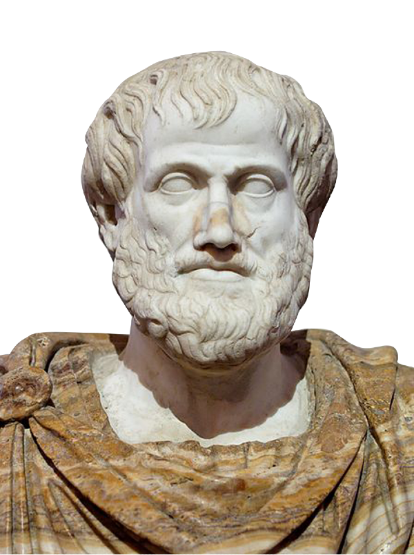
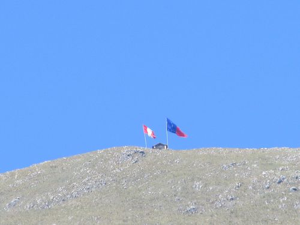
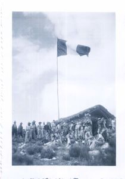
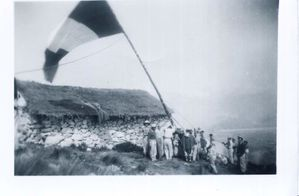
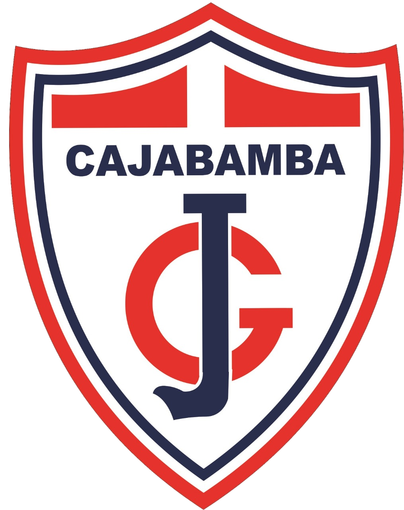

REVISTA DIGITAL
Primera Edición
Cajabamba - Perú
Título de la obra:
REVISTA DIGITAL
Institución Educativa Emblemática:
"JOSÉ GÁLVEZ" - Cajabamba
Diseño:
Hugo Pari Silva Santisteban
Código JavaScript para el libro: Joel Espinosa Longi, IMATE, UNAM.
Recursos interactivos: DescartesJS
Fuentes: Lato y UbuntuMono
PRIMERA EDICIÓN
LICENCIA

El contendido de esta obra esta bajo una licencia Creative Commons (Atribución-NoComercial-CompartirIgual).
Pedagogía
Proyecto Descartes: cognición y didáctica en la creación de contenido digital
David Oswaldo Zapata Tamayo
Revista digital JG 2022/Año 1, núm. 1
La discusión avanzó de tal manera que en el Renacimiento, en pleno auge del antropocentrismo, la razón y la lógica, la reflexión se engolfó en dos posibilidades: nacíamos con ideas prefijadas que íbamos recordando poco a poco, cuando el sujeto entra en relación con lo que es conocido (el racionalismo de René Descartes) o simplemente nacíamos como un tablero en blanco (tabula rasa) que iba siendo escrito por el sujeto en la medida que captaba información y fuera asumida como propia (el empirismo de John Locke).
En la historia más reciente de la educación, aparecen unos primeros atisbos disruptivos de las formas de enseñanza, partiendo de la propuesta de un “anarquista pedagógico”, el escritor ruso León Tolstoi, que en 1959 abre su casa de campo para enseñar desde la libertad del aprendizaje a un grupo de jóvenes, por fuera de los procedimientos instruccionales de su época, pues argumentaba que desde la libertad del niño se podía construir aprendizaje
No fue sino hasta el surgimiento de la pedagogía (aproximadamente en el siglo XIX) y de los aportes de la psicología enfocada en el aprendizaje y las teorías cognitivas, que comienzan a aparecer propuestas para analizar, validar y establecer paradigmas que aportaran al aprendizaje, tal es el caso del modelo desarrollista o cognitivo, que buscaba que el estudiante accediera, progresiva y secuencialmente, a la información o a las temáticas de estudio. Este escenario de aprendizaje estaba enmarcado en la autogestión, la autodisciplina y el deseo de sentirse autónomo en la construcción del saber. En consecuencia, aparecieron propuestas divergentes, como lo es la reconocida “Escuela Nueva”, dentro de la que figuran grandes pedagogos como María Montessori, John Dewey y Ovidio Decroly, y las propuestas cognitivas, con los aportes de Jean Piaget, David Ausubel e incluso Donal Novak. De estas vertientes han surgido otras importantes aportaciones a los procesos cognitivos, como el realizado por Howard Gardner (1983) con su teoría de las
Revista digital JG 2022/Año 1, núm. 1
inteligencias múltiples, Daniel Goleman (1995) con la inteligencia emocional o incluso los actuales aportes del aprendizaje invisible de Cristóbal Cobo.
En concordancia con lo anterior, las mediaciones pedagógicas reclaman una importancia absoluta a la hora de intencionar el aprendizaje, pues no sólo se responde a unas expectativas de
Revista digital JG 2022/Año 1, núm. 1
aprendizaje, sino que se busca que el estudiante logre un aprendizaje desde el contexto: geográfico, sociocultural, cognitivo, saberes previos, etc. De esta manera, los escenarios de aprendizaje de la era digital, en pleno desarrollo del siglo XXI, deben indudablemente aportar al éxito del conocimiento en las nuevas generaciones, como es la propuesta del modelo tecnológico educativo o tecnocrático, que de entrada puede presentar un sinnúmero de objeciones o inconformidades al asumir que dicho modelo no da cumplimiento u oportunidad al aprendizaje que se adquiere por la interacción kinestésica. Lo cierto del caso es que este modelo permite potenciar la interacción visual y auditiva, genera recordación, motiva al estudiante a resolver las dificultades, genera un resultado que va más allá de la puntuación y, en el caso de la gamificación, reta al estudiante ganarle a una máquina que lo pone a prueba.
Imaginemos, por ejemplo, qué hubiese sido del sistema educativo mundial si en la pandemia del COVID-19 el modelo tecnocrático no viniera estableciendo la vinculación de las nuevas tecnologías de la información y la comunicación con los procesos de mediación pedagógica. En el contexto de América Latina y el Caribe, se estima que:
En el 2020, a medida que la pandemia de la COVID se propagaba por todo el planeta, la mayor parte de los países anunciaron el cierre temporal de escuelas, lo que afectó a más del 91% de los estudiantes en todo el mundo. En abril de 2020, cerca de 1.600.000 niños y jóvenes estaban fuera de la escuela
El impacto que fue soportado por cientos de estrategias pedagógicas digitales de libre acceso de innumerables plataformas educativas, ya en marcha o emergentes, como respuesta a la eventualidad, hicieron posible el fortalecimiento de las didácticas y metodologías propias de los escenarios digitales, al punto de que muchas instituciones educativas hoy están buscando la forma de consolidar estrategias y
Revista digital JG 2022/Año 1, núm. 1
didácticas de la bimodalidad y robustecer así el acto educativo pospandemia.
Con todo lo anterior, es importante enfocar la atención en la simbiosis que se configura en la red educativa digital Descartes: aprendizaje interactivo, democratización educativa, construcción del saber de interés, conservación y divulgación del conocimiento, un verdadero escenario de las propuestas STEM (Science, Technology, Engineering and Mathematics), que amplía el espectro educativo a los idiomas y a los juegos como estrategia de aprendizaje (gamificación curricular); en resumen, un verdadero escenario de I+D+i (Investigación, Desarrollo e Innovación). Sin embargo, queda claro que “la tecnología no es trascendente si no es considerada como una herramienta para conformar el aprendizaje social y la inteligencia colectiva, pues el conocer implica generar. La educación formal supone incidir en la colectividad del aprendizaje”
Por tal razón, bien se puede reconocer los aportes que hace la RED Descartes al fortalecimiento de los currículos, ya que posibilita los contenidos de forma libre y autogestionables, que sirven no sólo como un soporte para la planificación y desarrollo curricular, sino que también son un escenario donde se puede aportar y actualizar contenido mientras se procura vincular a los estudiantes a través de la interacción con elementos didácticos que fomentan el aprendizaje, desde la motivación que generan las actividades hasta los ejemplos gráficos y el aprender “haciendo”. El docente o profesional que tiene injerencia en el saber específico ofrecido por la RED Descartes puede crear contenido ayudado por las guías técnicas y requisitos tecnológicos, revalidando que los escenarios digitales aportan a “desarrollar procesos en el estudiante que lo llevarán a hacer un uso más inteligente, estratégico y social […]; lo valioso no es acceder a la información, sino la creación social, la capacidad de atención que esta generará”
Revista digital JG 2022/Año 1, núm. 1
Así las cosas, el reconocimiento de los ambientes digitales interactivos, contar con docentes que sean creadores de contenidos de forma creativa e innovadora y la participación de estudiantes en escenarios académicos abiertos, dinámicos y científicos, contribuirá sin duda al fortalecimiento de las formas y los modos de conservar, divulgar y generar conocimiento, siendo esto un aporte seguro al logro del cuarto objetivo de desarrollo sostenible (2030): “garantizar una educación de calidad inclusiva y equitativa, y promover las oportunidades de aprendizaje permanente para todos”
Bibliografía
Revista digital JG 2022/Año 1, núm. 1
Diseño y
Educación
Reflexiones sobre el conocimiento práctico y teórico y la enseñanza significativa en el diseño
Jorge Andrés Rodríguez Acevedo
su vida profesional al aplicar lo aprendido donde, en ocasiones, no hay una relación entre lo teórico y práctico y estos distan de su finalidad.
Revista digital JG 2022/Año 1, núm. 1
Enseñar siempre ha sido una labor ardua y compleja, no por mucho el modelo enseñanza aprendizaje no ha variado considerablemente en las últimas décadas, Paiget & Vigotsky
La enseñanza y el aprendizaje es una interacción entre dos o más personas, en el ámbito del diseño esto implica diferenciar la enseñanza tradicional de la enseñanza significativa.
La enseñanza significativa se rige por la relación no arbitraria y sustantiva de ideas compartidas con algún aspecto relevante de la estructura del conocimiento de la persona, lo que implica un cierto grado de discernimiento del tema que se quiere aprender; por lo tanto, la enseñanza debe ser necesariamente conducida. Por dicha razón, el conocimiento significativo debe estar activo en el desarrollo continuo de la persona
Este artículo pretende gestionar un resumen autorreflexivo para el desarrollo de cuestionamientos sobre la enseñanza significativa del diseño y sus dos aristas fundamentales, el conocimiento teórico y el práctico, y tratar de entender, en algún grado, la enseñanza proyectual como raíz epistemológica del a hacer del diseño.
Reflexión conocimiento teórico práctico
En la enseñanza del diseño siempre hay dos aristas fundamentales, el saber práctico que sugiere una acción y el teórico que sienta las bases para el contexto, y ejecutar el primero. Ambos saberes buscan una transmutación de la realidad para convertirla en proyección.
Revista digital JG 2022/Año 1, núm. 1
Aristóteles en ética a Nicómaco
Para Aristóteles, la sabiduría práctica estaría vinculada a la sabiduría política, es decir, al saber, capaz de justificar las normas y valores para lograr una convivencia ordenada y sin conflictos, por consiguiente justa, en la cual sea posible realizar una vida feliz digna de los humanos y por lo tanto buena.
En el diseño ocurre una transformación diferente, respecto a cómo se enseña y se aprende este tipo de conocimiento.
El conocimiento proyectual forma parte de un grupo de disciplinas que sólo pueden aprenderse en la práctica, aunque parezca paradójico a diseñar se aprende diseñando. Es por eso que los trabajos realizados en los talleres de Diseño, tienen un rol vertebrador en las carreras de diseño y demandan al alumno la integración de diversos campos epistemológicos (
Entonces parece extraño que el saber práctico ocupase mas relevancia en las disciplinas proyectuales. No necesariamente, hace falta una actitud mas comprometida frente a los profesionales que enseñan en el diseño, como también a los estudiantes que se forman.
Revista digital JG 2022/Año 1, núm. 1
El vínculo entre ambos saberes es irrefutable, puesto que la vida práctica requiere del elemento contemplativo o reflexivo (lo teórico).
Quien se halle provisto tan sólo de la técnica de su profesión se encontrará, por muy bien que la posea, en la situación de un trabajador que durante toda su vida se ocupa en un sólo punto de esa gran máquina, desconociendo las fuerzas que la ponen en movimiento y sin tener idea de las otras partes del ingenio y de su cooperación en el fin total, será un servicial instrumento de la sociedad pero no un órgano que la plasme conscientemente (
Doberti
Bajo este enfoque es importante analizar que hay una cuestión más profunda que requiere cierto grado de discernimiento entre la enseñanza del diseño y su aplicación práctica en contextos determinados, y su comprensión teórica. Esto requiere un planteamiento superior ya que estamos hablando de un saber que tiene sus fundamentos en distintas áreas del conocimiento y por tanto tributa a todos. Lo que requiere una resignificación de su valor teórico y práctico, por que ambos son válidos y aplicables.
La ciencia, las metodologías y los procesos constantemente están sujetos al riesgo conceptual, y este riesgo consiste en ser progresivo o regresivo, lo que permite diagnosticar su estado de hipótesis, además lleva a replantear nuevas soluciones o reflexiones desde una postura creativa (filosófica). Lo que no permite falsar con exactitud ni corroborar con exactitud
Revista digital JG 2022/Año 1, núm. 1
La afirmación de Kuhn expone la posibilidad de que los procesos integrales del conocimiento, por lo menos en ciertos periodos de tiempo, están en constante cambio, lo que implica a su vez que en el diseño debe existir una mejora sistemática en la educación.
La formación docente en diseño viene con la relación de la formación profesional del diseñador, donde se incorporan algunas dinámicas pedagógicas de sus propios docentes, esta conjunción es lo que soporta la base de la propuesta de enseñanza, de igual manera, de esta serie de crónicas y experimentos prácticos se van conformando la enseñanza proyectual
Por otra parte, es importante enumerar hasta que punto se tiene un conocimiento teórico desarrollado por la lectura y la práctica docente, y por otra, donde esta la continua evolución de docente proyectista, que a su vez esté inmerso en la práctica comercial del hacer continuo del diseño, lo que lo lleva a estar actualizado desde todas las aristas posibles.
En la variopinta topografía de la práctica profesional existen unas tierras altas y firmes desde las que se divisa un pantano. En las tierras altas, los problemas fáciles de controlar se solucionan por medio de la aplicación de la teoría y la técnica con base en la investigación. En las tierras bajas del pantano, los problemas confusos y poco claros se resisten a una solución técnica. Lo paradójico de esta situación es que los problemas de las tierras altas tienden a ser de relativa importancia para los individuos o para la sociedad en su conjunto, aún a pesar de lo relevante que puede resultar su interés técnico, mientras que en el pantano residen aquellos otros problemas de mayor preocupación humana. El práctico debe elegir ¿Tendrá que quedarse en las tierras altas donde le es posible resolver problemas de relativa importancia según los estándares de rigor predominantes, o descenderá al pantano de los problemas relevantes y de la investigación carente de rigor? (
Revista digital JG 2022/Año 1, núm. 1
Debido a la naturaleza del diseño y puesto que los diseñadores resuelven dificultades, es importante reflexionar sobre la realidad teórica versus la necesidad práctica, los problemas planteados en la realidad a menudo nunca se presentan como esquemas delimitados o con pasos secuenciales a resolver. De hecho, esta naturaleza es tan común que la mayoría de problemas a resolver siempre distan de una naturaleza de diseño y vienen disfrazados de distintos aparejos. Otro rasgo implica pensar teniendo en consideración que los aprendizajes no son iguales para todos.
La enseñanza significativa
Según Freire
Por tratarse de una disciplina como el diseño que integra tantas áreas de acción, hace falta considerar un campo humano y ético que soporte elementos frente al quehacer disciplinar, esto se logar con docentes más articulados con las temáticas prácticas desde lo práctico y fundamentados en lo teórico, donde la enseñanza presenta un reto.
En diseño y en educación siempre se presentan situaciones que conllevan a establecer diferentes mecanismos pedagógicos y didácticos, pero son los procesos educativos con una visión más holística los que podrían dotar de habilidades al estudiantado para su vida profesional.
Revista digital JG 2022/Año 1, núm. 1
Para Bustingorry & Mora
Una construcción de conocimiento significativo se justifica en que los alumnos aprendan lo mejor posible, donde hay una construcción desde la episteme y la praxis, de allí que tengan estrategias de evolución del aprendizaje y de la enseñanza, y su pilar fundamental sea el aspecto ético
Entonces, cuando se habla de conocimiento significativo en diseño podría decirse que son todos aquellos fundamentos teórico prácticos que involucran una reorganización cognitiva constante, apoyada en la resiliencia y en la creatividad donde se halle un profesional más humano.
“Este aprendizaje subyace a la integración constructiva de pensamientos, sentimientos y acciones, que a su vez conducen al engrandecimiento humano, generando una sensación buena, agradable y aumentando la disposición para la adquisición de nuevos conocimientos”
Si bien la propuesta apunta a una mejora sistemática en la educación mediada por recursos prácticos, teóricos o digitales, no olvidemos que los recursos no significan mejor educación. Hace falta una mejor preparación frente a la didáctica de la enseñanza y la motivación.
Revista digital JG 2022/Año 1, núm. 1
Por otro lado, se presenta el estudiante con todas sus dinámicas sociales, psicológicas y personales donde la academia lo centra como el recurso más valioso. A si mismo también, llenos de atadijos, complicaciones y tal vez por condición generacional de un desánimo perturbador, teniendo en consideración que los aprendizajes no seducen por igual a todos.
Lo adquirido versus lo requerido: La mayor deficiencia detectada es el desconocimiento de la realidad laboral, indica que en el periodo de formación nos vemos empapados de la parte positiva, por decirlo así del diseño, la problemática radica desde las aulas de clase, pues la mayoría de los profesores no laboran en algo directamente relacionado con la actividad del diseño ni aplicación del conocimiento del campo (
Los anteriores párrafos ejemplifican una realidad condensada donde se establece el factor estudiantil con sus condiciones sociológicas y el factor pedagógico con la experiencia respectiva del docente, elementos a tener en cuenta, ambos en pro del bienestar del alumno en el campo profesional.
Por otro lado, Vigotsky
Revista digital JG 2022/Año 1, núm. 1
Esto supone el surgimiento de profesionales mejor preparados y jerárquicamente definidos, donde los campos de acción estén debidamente delimitados por el conocimiento teórico y práctico en sus áreas respectivas. La necesidad parece indicar que se deben formar diseñadores en tres direcciones, el diseño como arte se relaciona con la capacidad expresiva, el diseño como ciencia se vincula a la presentación sistemática y objetiva de información, y el diseño como comunicación, esto mediado con la interpretación de la audiencia
A modo de cierre se puede exponer la demarcación de la disciplina que construye el diseño. Esta se provee de dos componentes trasversales, lo teórico y lo práctico. Es parte de la profesión del diseño dar un buen manejo de la justificación del conocimiento, los lenguajes técnicos y la construcción conceptual que da sustento comunicacional al proyecto en sí. Esto legitima al diseñador como profesional holístico, pero a su vez lo desafía a legitimar esa teoría utilizada por medio de los conocimientos necesarios para resolver determinado problema que tiene asidero en la vida práctica.
Así mismo, el docente posee una acción transformadora, ya que en el recae el modelo ético de un profesional íntegro, el cual lo lleva por distintos parajes de la enseñanza práctica y teórica en busca de la solución de problemas que nos atraviesan para la técnica cultural y la metodología de diseño como pensamiento sistemático.
Falta reflexión teórica que sistematice estas experiencias y trascienda el anecdotario de mero interés testimonial sobre procesos de trabajo específicos. Lo que se encuentra publicado en general tiende a mostrar, no a sistematizar el conocimiento ni a plantear problemas conceptuales (
Revista digital JG 2022/Año 1, núm. 1
El grado de ambigüedad en lo que se considera como conocimiento teórico y práctico a menudo se ejemplifica como la dialéctica del profesor que defiende su saber como una postura firme de lo que prima en sus clases. Es aquí donde se necesita un puente entre lo pertinente y su cimiento conceptual, lo que involucra la participación de diferentes actores que trabajen con algún grado de sinergia.
Es imperativo que la academia, el estado y la empresa conversen en función de la producción de sociedad con la labor del diseño como agente conciliador del origen práctico y también teórico de sus saberes, ya que, a su vez, debido al crecimiento de la disciplina y su participación en múltiples aspectos de la vida en sociedad, exige una incorporación cada vez más sólida de la teoría en la formación del profesional del diseño.
Por último, no se entiende una institución de educación superior ajena a las demandas sociales, esto es, no se justifica una universidad inútil o disfuncional, pues ella tiene un papel relevante en la sociedad. Por eso, ante una sociedad como la actual, también necesitamos renovar los cimientos de la universidad que le permita a la revolucionaria sociedad del conocimiento, reformas orientadas en múltiples direcciones: en las metodologías docentes y los procesos formativos de los estudiantes
Evaluación
En la siguiente escena interactiva se presentan algunas afirmaciones ¿falsas?, ¿verdaderas?
Si has leído el artículo, sabrás cuáles son ciertas y cuáles son falsas.
Revista digital JG 2022/Año 1, núm. 1
Revista digital JG 2022/Año 1, núm. 1
Revista digital JG 2022/Año 1, núm. 1
Matemáticas
¿Como el uso de las matemáticas te permite optimizar el uso de los recursos naturales?
Preguntas y respuestas
Las matemáticas, útiles para el medio ambiente.
El medio ambiente se puede beneficiar de las matemáticas de muchas formas: contribuyen a comprender los fenómenos, a cuantificar los resultados, a conocer las causas y los efectos y a tomar decisiones.
Revista digital JG 2022/Año 1, núm. 1
¿Cómo nos ayudan las matemáticas en la vida diaria?
Sirven como patrones para guiar su vida, un estilo de enfrentarse a la realidad lógico y coherente, la búsqueda de la exactitud en los resultados, una comprensión y expresión clara a través de la utilización de símbolos, capacidad de abstracción, razonamiento y generalización y la percepción de la creatividad
¿Cuáles son los beneficios que se obtienen de las matemáticas en los recursos naturales?
Conseguir nuevos algoritmos matemáticos y ecuaciones que sean útiles para proyectos tan diversos como gestionar mejor los recursos naturales como el agua, mejorar las predicciones meteorológicas u optimizar los procesos de construcción aeronáutica y naval, posibilitará igualmente desarrollar nuevas líneas y gestionar.
Revista digital JG 2022/Año 1, núm. 1
¿Cómo ayudan las matemáticas a cuidar el agua?
Con esta herramienta es posible predecir la evolución de un área contaminada. ... A partir de las predicciones obtenidas se puede determinar la efectividad de la degradación natural y por tanto, en qué casos es posible evitar los costosos e invasivos métodos de remediación de acuíferos.
¿Qué aportes ha realizado las matemáticas para tener un mundo mejor?
Las matemáticas brindan una serie de beneficios muy útiles para nuestra mente, pues desarrollan la capacidad de razonamiento, nos ayudan a cultivar el pensamiento analítico, aceleran nuestra mente, generan practicidad y también su uso puede aplicarse cotidianamente.
¿Cuáles son los beneficios de las matemáticas?
Las matemáticas nos hacen razonar mediante una fórmula lógica, utilizando datos reales que son verificables. Esto nos permite enfrentarnos al mundo buscando respuestas basadas en evidencias y no solo en creencias o emociones.
¿Cómo se relaciona el medio ambiente con las matemáticas?
Se han desarrollado sistemas que analizan la contaminación atmosférica para predecir contingencias, mientras algunos otros han creado simulaciones matemáticas que constatan la degradación del mar por la sobrepesca y predecir el futuro de la biodiversidad
Revista digital JG 2022/Año 1, núm. 1
¿Cómo las matemáticas pueden ayudar al medio ambiente?
Se han desarrollado sistemas que analizan la contaminación atmosférica para predecir contingencias, mientras algunos otros han creado simulaciones matemáticas que constatan la degradación del mar por la sobrepesca y predecir el futuro de la biodiversidad.
¿Qué elementos de las matemáticas apoyan el cuidado del medio ambiente?
Las matemáticas al igual que la física se pueden aplicar al estudio del medio ambiente, su contribución es principalmente la búsqueda de modelos que describan un problema ambiental para encontrar una posible solución, los modelos matemáticos que describen un problema ambiental son muy importantes.
Revista digital JG 2022/Año 1, núm. 1
Didáctica
de la
matemática
PROYECTO INTERDISCIPLINAR “Diviértete reciclando”
LA MEDIDA: MIDE LO QUE RECICLAS
JUSTIFICACIÓN
Revista digital JG 2022/Año 1, núm. 1
DESEMPEÑOS
En relación con el currículo
- Valorar sus propias cualidades a la hora de afrontar situaciones con contenido matemático y desarrollar actitudes positivas hacia el trabajo y la superación de las dificultades.
- Utilizar el razonamiento y otros procedimientos matemáticos en contextos de aprendizaje escolar y en situaciones de la realidad cotidiana.
- Calcular y estimar longitudes, superficies y volúmenes, utilizando el instrumento de medida o procedimiento más adecuado y expresando el resultado en la unidad adecuada.
- Desarrollar estrategias de resolución de problemas y consolidarlas como método de trabajo individual y colectivo.
Revista digital JG 2022/Año 1, núm. 1
DESEMPEÑOS
En relación con la programación
- Identificar las magnitudes y diferenciar sus unidades de medida.
- Calcular y trabajar con longitudes, capacidades, pesos, superficies y volúmenes, utilizando procedimientos adecuados y expresando correctamente el resultado.
- Desarrollar estrategias de resolución de problemas.
- Conocer e interpretar las relaciones desarrollo-medio ambiente, y la necesidad de buscar soluciones para un futuro sostenible.
- Comprender la necesidad de reciclaje.

Revista digital JG 2022/Año 1, núm. 1
CONTENIDOS
Conceptuales
Unidades de Medida del Sistema Métrico Decimal y equivalencias:
· longitud,
· capacidad,
· peso,
· volumen.
- Residuos y reciclado
Procedimentales
- Estimación y comprobación de predicciones.
- Realización de mediciones y cálculos.
- Escoger la unidad de medida en función de aquello que se mide.
- Conversión de unas unidades en otras.
- Resolución de problemas reales.
- Obtención de conclusiones.
Revista digital JG 2022/Año 1, núm. 1
Actitudinales
- Atribuir al medio ambiente la importancia que merece, fomentando actuaciones para su mejora.
- Reconocer los problemas medioambientales, desarrollando una actitud activa y favorable a su conservación y protección.
- Comprender y valorar el proceso y la necesidad del reciclaje.
METODOLOGÍA
- Que las actividades despierten interés, sean agradables y motivadoras.
- La actividad debe conducir a la adquisición de conocimientos, habilidades, destrezas, valores personales y sociales.
- Comprender y valorar el proceso y la necesidad del reciclaje.
- Aplicar a situaciones concretas del entorno, los conocimientos adquiridos.
- Poner a disposición del alumnado todos los recursos posibles.
Revista digital JG 2022/Año 1, núm. 1
- Las actitudes de conservación y mejora del medio ambiente, que queremos enseñar, las trabajaremos a partir de tres modelos:
- consecuencias: Ley de Efecto.
- modelos: Aprendizaje Observacional.
Ambos basados en Aprendizaje Asociativo, a través de la experiencia directa.
EVALUACIÓN
Para la evaluación, que será continua, vamos a considerar tanto al proceso de enseñanza/aprendizaje como al alumnado :
Respecto al proceso de enseñanza/aprendizaje tendremos en cuenta:
- Atribuir al medio ambiente la importancia que merece, fomentando actuaciones para su mejora.
- Reconocer los problemas medioambientales, desarrollando una actitud activa y favorable a su conservación y protección.
- Comprender y valorar el proceso y la necesidad del reciclaje.
Revista digital JG 2022/Año 1, núm. 1
Respecto al alumno evaluaremos:
- Actitud positiva y participación de los alumnos en la realización de las tareas, a nivel individual y colectivo. Así pues, se les exigirá que realicen las actividades.
- Grado de consecución de los objetivos de aprendizaje, y cómo los han puesto en práctica (los criterios de evaluación los exponemos al inicio de esta unidad, junto a los objetivos y contenidos de aprendizaje).
- Efectos no previstos en el currículum oculto.
- Pondremos énfasis en los procesos, ya que sólo comprendiendo éstos, y la historia del alumnado, pueden explicarse los resultados del aprendizaje.
- Procuraremos que la evaluación sea lo más participativa posible por parte de los estudiantes.
- Los instrumentos de evaluación serán: el cuaderno de clase y un examen escrito al finalizar la unidad.
Esta evaluación servirá para modificar, sobre la marcha, aquellos apartados donde presente problemas esta planificación, para asegurar de este modo los mejores resultados posibles.
El diseño de la evaluación será flexible y abierto.
Revista digital JG 2022/Año 1, núm. 1
DESARROLLO DE LA ACTIVIDAD
- Cada 1000 kg de cartón que se recogen sirven para obtener 850 kg de cartón reciclado. Si reciclamos 9 532 kg de cartón, ¿cuánto cartón reciclado obtenemos?
- Por cada tonelada de papel que reciclamos salvamos 14 árboles, ¿cuántos árboles salvamos en el problema anterior?
- Cinco árboles absorben aproximadamente una tonelada de CO2 durante su vida. ¿Cuántas toneladas absorberán los árboles anteriores?
- Cada persona produce una media de 1,5 kg. de basura al día. ¿Cuánta basura produciremos aproximadamente los alumnos de esta clase en una semana?
- Un coche gasta 6 litros de gasolina cada 100 km. ¿Cuánto consume para ir a Cajamarca que está a 170 km.? Por cada litro emite 2,6 kg. de CO2 a la atmósfera. ¿Cuánto CO2 emite para ir a Cajamarca?
- Cada cajabambino consume 146 litros de agua al día aproximadamente. ¿Cuánta agua utilizamos los alumnos de esta clase en un mes?
- Al bañarnos gastamos unos 300 litros, pero con una ducha de 5 minutos de 100 litros, ¿cuánto podríamos ahorrar en una semana? ¿Cuántos m3 supondrían?
- Dejar un grifo abierto durante un minuto gasta 4 litros de agua, ¿cuánto gastará en 20 minutos?
Revista digital JG 2022/Año 1, núm. 1

Revista digital JG 2022/Año 1, núm. 1
ANDINISMO
POR EL PROF. LUIS MONZON PALMA
Izar la bandera nacional en la cima del Chochoconday, fué un sueño de Luis Mónzón que se hizo realidad un 30 de Mayo de 1954 en la celebración del aniversario del Colegio José Gálvez con la entusiasta e incondicional participación de quienes se convertirían en los primeros "Andinistas Josegalvistas". Como Simón Bolivar con el Chimborazo. Luis Monzón recibió la inspiración divina y desde entonces dicho acontecimiento se convirtió en una tradición Cajabambina que de manera ininterrumpida se lleva a cabo todos los años por cuanta generación de Josegalvistas de corazón siguen haciendo suyo el sueño de coronar el majestuoso Chochoconday e izar no solamente el pabellón nacional sino también la bicolor bandera Josegalvista.
Revista digital JG 2022/Año 1, núm. 1
El ex-senador Cajabambino Genaro Ledesma escribió en su libro "El parto de Gloriabamba" refiriéndose allá por el año 1824 mientras Simón Bolivar recibía en Cajabamba a los "Lanceros de la Victoria" "...en su acción defensistica el Chochoconday es un cerro privilegiado e imbatible. pero a veces se fatiga, suda sangre y ronca como un caballo en una cuesta agotadora. El cura Jardy ( un párroco francés que acompañaba al Libertador) no entiende bien esas manifestaciones de la montaña tutelar y considerando que el Chochoconday es un cerrro embrujado, mandó colocar una cruz de gran tamaño en su cúspide, lo que encabritó aún mas a dicha montaña,pues no admitía montura alguna sobre su cresta, y quien lo haga, resultará montando un toro bravo y loco y que responda a sus consecuencias. Tal sería el descubrimiento que en el decurso de largos años de romería hiciera elprofesor gloriabambino Luis Monzón Palma. Por el apellido materno "Palma" esta en el nirvana de los familiares del eximio tradicionista peruano Ricardo Palma, descendiente de cajabambinos.
Año 1954 Estos fueron los primeros Andinistas Josegalvistas:
Primer Grupo:
JEFE: Alipio Narvaez Seminario;
INTEGRANTES: Mauro Salaverry, Calos Corcuera, Edwin Castañeda Johanson, Walter Rabines Nieto, Francisco Gálvez, Quirino Silva Rodríguez, José Calderón Johanson.
Revista digital JG 2022/Año 1, núm. 1

Segundo Grupo:
JEFE: Santiago Contreras Moya; INTEGRANTES: Germán Calderón Santillán, Felipe Calderón Ortiz, Alcides Aguilar Cornelio, Alvaro Witembury Quevedo, José Martínez, Luis Rubio, Alvaro Zavala Salaverry.
Tercer Grupo:
JEFE: Bernardo Rodríguez Campos; INTEGRANTES: Luis Cueva, Reynaldo Perez Lara, Alfredo Calderón Vásquez, Segundo Valverde, Wilser Poma, Gonzalo Rengifo, Luis Casana Aristizabal.
GALERÍA DE FOTOS
Revista digital JG 2022/Año 1, núm. 1
